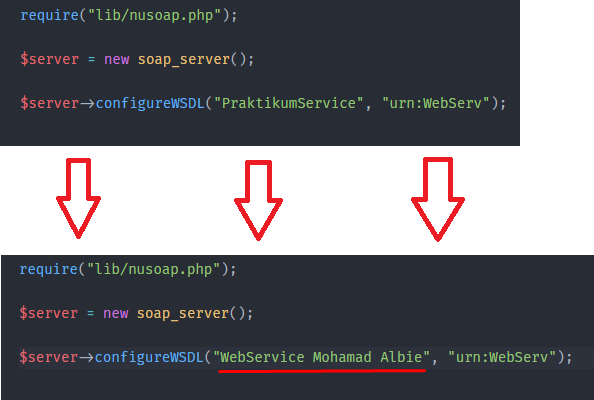
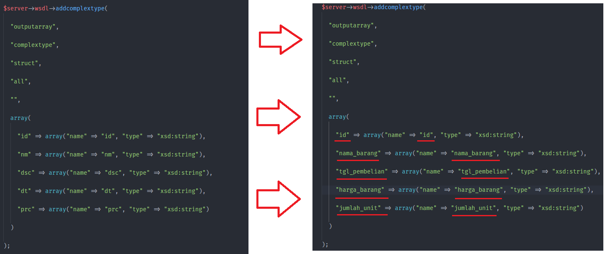
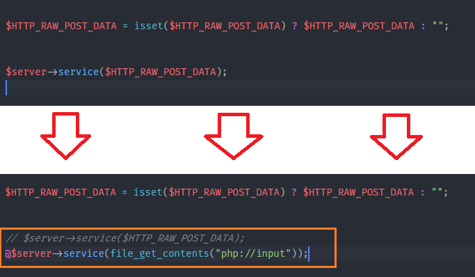
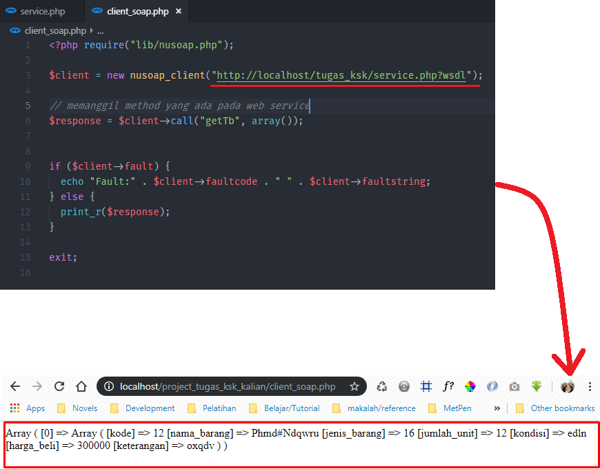
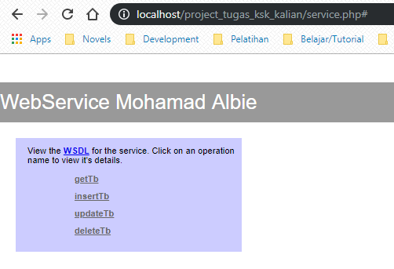

*file bisa didownload disini : kreasi sabun
*file yang saya gunakan di tutorial ini sudah saya sedikit modifikasi dari file yang diberikan pa Ramdhani
*host, username dan password biasanya sama dengan gambar diatas jika masih pengembangan di localhost (ubah jika sudah di deploy / diupload / di hosting ke server kalian)
*gambar diatas hanyalah contoh, struktur table bisa kalian liat di localhost/phpmyadmin
*untuk lebih cepat, parameter fungsi bisa kalian copy & paste dari code parameter insertTb()
*bedanya dengan langkah 5: (nama_field1, nama_field2) VALUES ('param1', 'param2'), langkah 6: nama_field1 = 'param1'
*contoh lain : nama_karyawan = '". $nama_karyawan ."', gaji = '". $gaji ."'
*biasanya field id adalah field yang paling awal dan primary key, contoh : id_barang, kode_barang, nip, nik, dsbg
#Pada langkah ini, kalian bisa menambahkan nama kalian di $server->configureWSDL()
#Mengubah $server->wsdl->addcomplextype()
#Memperbaiki error : xml empty
*segala kesalahan / error adalah tanggung jawab masing-masing, dan saya cuma membagikan sedikit pengalamansaya.
*jika ada yang kurang jelas, jangan sungkan untuk bertanya.
*pada Dosen tentunya (bukan dengan saya) :v
#sebenarnya ada cara lain untuk melakukan pengujian web service soap, tapi disini kita pakai cara simple yaitu dengan membuat client web service kita sendiri :
*Download: client_soap.php
*jika sdh seperti gambar diatas maka request dan response web service soap kamu telah berhasil !
*untuk melihat langkah pengujian menggunakan PostMan bisa diliat disini
**REVIEW: Untuk melihat hasilnya kalian bisa buka di localhost/project_tugas_ksk_kalian/service.php
**DEPLOY: Jika sudah kalian pastikan berhasil seperti gambar diatas maka dengan tanggung jawab masing masing silahkan upload file service.php dan folder lib ke server hosting kalian, dan sesuaikan pengaturan koneksi di file service.php sesuai pengaturan database di hosting kalian.